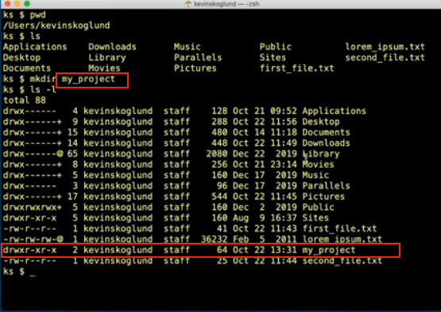
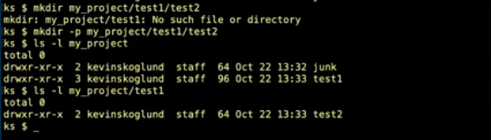

creating the directories
mkdir
creating a new folder is the same as creating a new directory
we use the mkdir command in the terminal to do this
type mkdir followed by the path to the directory you want the new directory to be in
by default it goes in the current working directory "pwd"
mkdir -p
to make multiple directories nested inside, us the -p option
